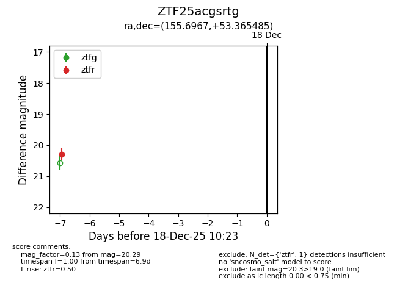
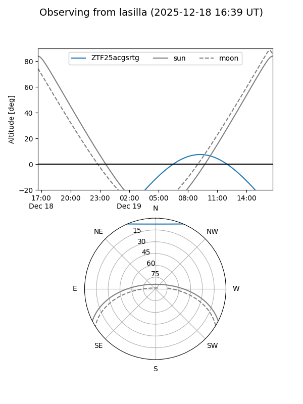
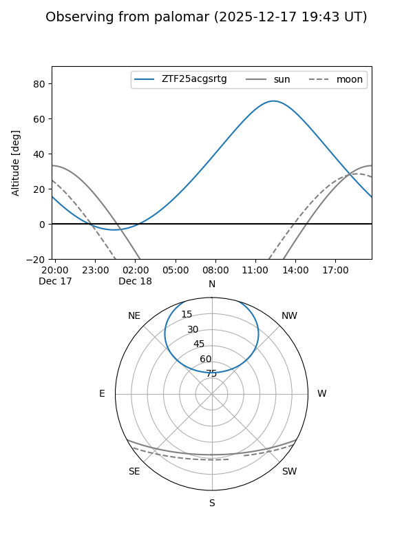

ZTF25acgsrtg
Target ZTF25acgsrtg at 2025-12-18 11:18
Aliases and brokers:
FINK: fink-portal.org/ZTF25acgsrtg
Lasair: lasair-ztf.lsst.ac.uk/objects/ZTF25acgsrtg
ALeRCE: alerce.online/object/ZTF25acgsrtg
alt names
ZTF25acgsrtg (ztf,fink_ztf)
Coordinates:
equatorial (ra, dec) = 155.6967,+53.36549
equatorial (HMS+DMS) = 10:22:47.21,+53:21:55.75
galactic (l, b) = (158.8654,+52.10375)
Photometry
last ztfr=20.29
1 ztfr detections
Lightcurve

Visibility


Additional plots